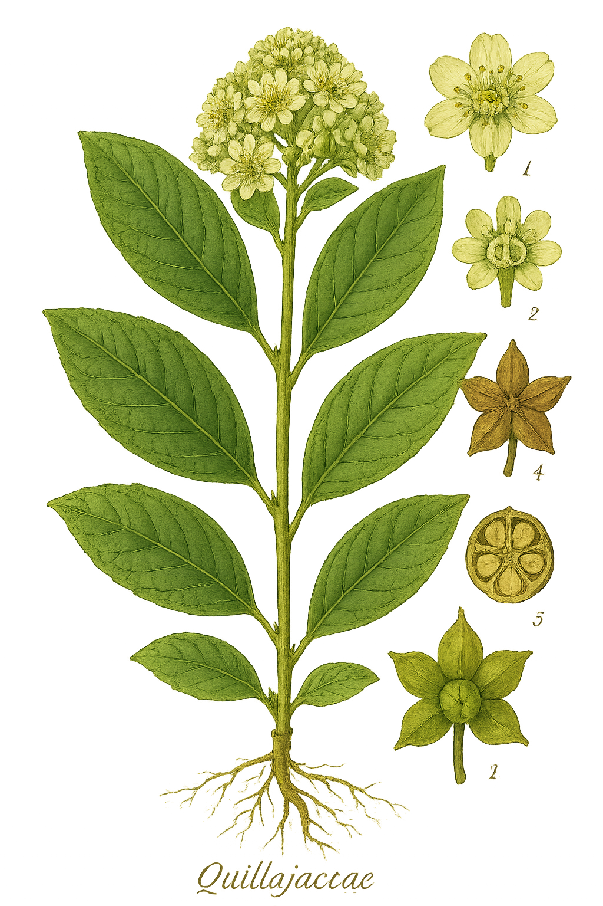

Quillajaceae
Soapbark Family
Quillajaceae is a small family containing a single genus, Quillaja, with 2-3 species of evergreen trees native to temperate South America (primarily Chile and Argentina). The family is renowned for the high concentration of saponins in the bark of its members, particularly Quillaja saponaria, the Soapbark Tree. These compounds cause the bark extracts to foam readily in water, leading to traditional and commercial uses as soaps and emulsifiers.
Overview
The Quillajaceae family, though small, holds significant economic and ecological importance in its native range. The Soapbark Tree, Quillaja saponaria, is characteristic of the sub-Andean sclerophyllous forests and woodlands of central Chile. Its bark has been harvested for centuries for its detergent properties.
Modern applications leverage the unique properties of Quillaja saponins. They are used commercially as natural foaming agents in beverages (like root beer), as emulsifiers in foods and cosmetics, and as adjuvants in vaccines to enhance immune responses (e.g., QS-21). Research continues into other potential pharmaceutical applications.
Ecologically, Quillaja trees provide habitat and resources in their native ecosystems. Their flowers attract pollinators, and they are adapted to Mediterranean-type climates with dry summers.
Quick Facts
- Scientific Name: Quillajaceae
- Common Name: Soapbark Family
- Number of Genera: 1 (Quillaja)
- Number of Species: 2-3
- Distribution: Temperate South America (Chile, Argentina, Peru, Bolivia)
- Evolutionary Group: Eudicots - Fabales
Key Characteristics
Growth Form and Habit
Members are evergreen trees, reaching heights of 15-20 meters.
Leaves
Leaves are simple, arranged alternately, and possess small stipules. The leaf blades are typically thick, leathery (coriaceous), oval-shaped, 3-5 cm long, with smooth or toothed margins.
Sexuality and Inflorescence
Flowers are borne in terminal or axillary clusters, often resembling corymbs. Flowers are typically perfect (bisexual), though some functionally male flowers may occur on the same plant (andromonoecious).
Flowers
Flowers are actinomorphic (radially symmetrical), relatively large (1-1.5 cm diameter), and often greenish-white or yellowish-white.
- Sepals: 5, thick, persistent in fruit.
- Petals: 5, present, often spatulate (spoon-shaped), yellowish-white, sometimes with nectar guides.
- Stamens: 10, arranged in two whorls of 5; filaments are distinct. Anthers dehisce via longitudinal slits.
- Ovary: Superior, composed of 5 carpels that are mostly free (apocarpous) but united at the base around a central nectar disc. Each carpel contains several ovules. Styles are 5, free.
Fruits and Seeds
The fruit is highly distinctive: an aggregate of 5 leathery or woody follicles arranged in a star shape. Each follicle develops from one carpel and splits open along its inner suture at maturity to release seeds. Seeds are oblong and possess a terminal wing, aiding in wind dispersal.
Chemical Characteristics
The defining chemical feature is the abundance of triterpenoid saponins, particularly concentrated in the bark, but also present in wood and roots. These complex glycosides have surfactant properties, creating stable foam when agitated in water. Different types of Quillaja saponins (like QS-21) have distinct biological activities.
Field Identification
Identifying Quillajaceae (specifically Quillaja) relies on its unique combination of features:
Primary Identification Features
- Habit: Evergreen tree in temperate South America.
- Leaves: Simple, alternate, leathery, oval, with stipules.
- Flowers: Showy, greenish-white/yellowish-white, with 5 petals and 10 stamens.
- Fruit: Distinctive star-shaped aggregate of 5 follicles.
- Bark: Thick, dark, rich in saponins (inner bark foams intensely when mixed with water).
Secondary Identification Features
- Flower Clusters: Flowers arranged in terminal or axillary corymb-like groups.
- Ovary Structure: 5 mostly free carpels visible in the flower center.
- Winged Seeds: Found within mature, opened follicles.
- Habitat: Sclerophyllous woodlands and forests in regions with Mediterranean climates (Chile, Argentina).
Seasonal Identification Tips
- Flowering Season: Typically occurs in late spring to early summer (e.g., October-December in Chile).
- Fruiting Season: Fruits mature later in the summer and autumn, persisting on the tree. The star-shaped structure is evident as it develops.
- Vegetative State: Evergreen leaves are present year-round. Bark characteristics are always visible.
Common Confusion Points
In its native range, Quillaja might be confused with other evergreen trees:
- Escalloniaceae (e.g., Escallonia): Often shrubs or small trees with simple alternate leaves, but flowers usually have fused carpels forming a capsule or berry, not an aggregate of follicles.
- Rosaceae (e.g., Kageneckia): Some Chilean Rosaceae are evergreen trees with simple alternate leaves, but flower structure (hypanthium often present, numerous stamens, different ovary/fruit types) is distinct.
- Myrtaceae (e.g., Luma, Myrceugenia): Have opposite leaves and different flower/fruit structures (often berries).
The unique star-shaped fruit and saponin-rich bark are key distinguishing features.
Field Guide Quick Reference
Look For:
- Evergreen tree (Temperate S. America)
- Simple, alternate, leathery leaves
- Stipules present
- Showy flowers with 5 petals & 10 stamens
- Ovary of 5 mostly free carpels
- Fruit: Star-shaped aggregate of 5 follicles
- Bark rich in saponins (foams)
Key Variations:
- Leaf margin (entire vs. toothed)
- (Very little variation as it's one genus)
Notable Examples
The family contains only one genus, with Quillaja saponaria being the primary species:

Quillaja saponaria
Soapbark Tree
The quintessential member of the family, native to central Chile and Argentina. This evergreen tree is the source of commercial soapbark extract. It features glossy, leathery leaves, clusters of whitish flowers, and the characteristic star-shaped fruit composed of five follicles. It's valued for its saponins and is also drought-tolerant.
Phylogeny and Classification
Quillajaceae occupies a significant position within the order Fabales. Molecular phylogenetic studies consistently place Quillajaceae as the sister group to the rest of the order. This means it represents the earliest diverging lineage within Fabales, branching off before the diversification of the other three families: Fabaceae (legumes), Polygalaceae (milkworts), and Surianaceae.
Its placement in Fabales is supported by DNA evidence, despite some morphological differences from the core families (especially Fabaceae). Features like stipulate leaves and aspects of wood anatomy link it to the order, while its apocarpous ovary (mostly free carpels) and follicular fruit are considered ancestral (plesiomorphic) traits within the Fabales context.
Position in Plant Phylogeny
- Kingdom: Plantae
- Clade: Angiosperms (Flowering plants)
- Clade: Eudicots
- Clade: Rosids
- Order: Fabales
- Family: Quillajaceae
Evolutionary Significance
Quillajaceae is important for understanding the early evolution of the Fabales order:
- Basal Position: Provides insights into the ancestral characteristics of Fabales before the major radiations of families like Fabaceae. Features like the aggregate of follicles might represent an ancestral fruit type for the order.
- Unique Chemistry: The high concentration of specific triterpenoid saponins is a distinctive chemical profile within the order, useful for chemotaxonomy.
- Biogeography: Its restricted South American distribution contrasts with the global distribution of Fabaceae and Polygalaceae, offering clues about the order's origins and dispersal.